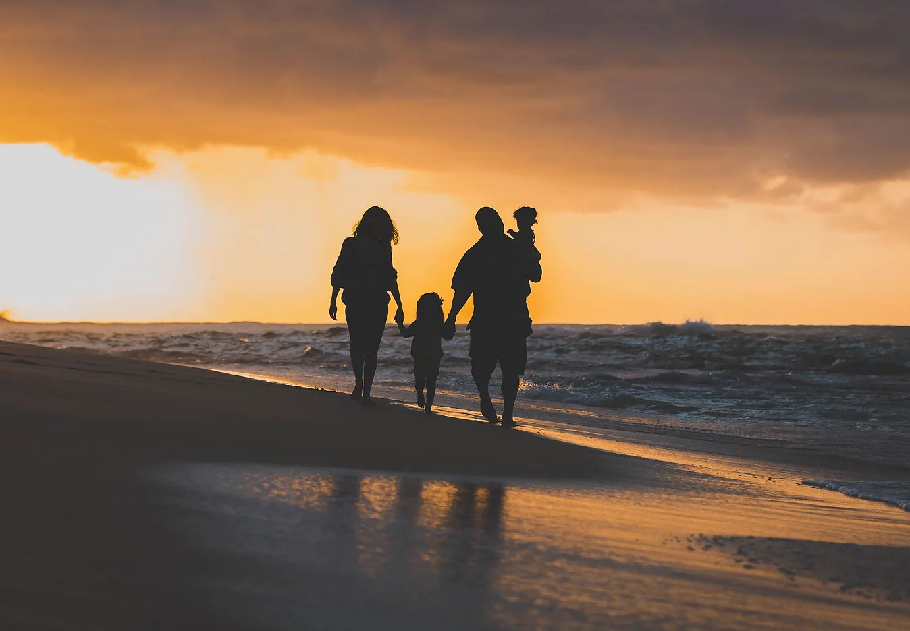
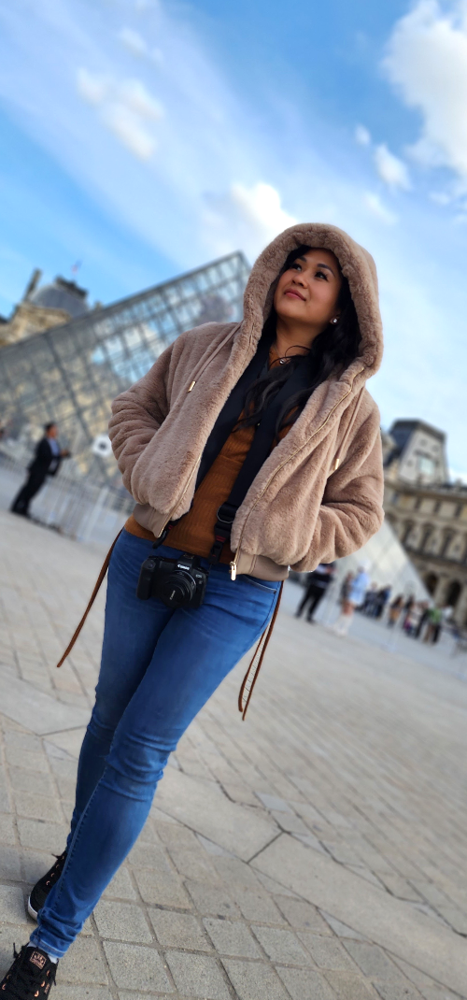

Behind the camera
A love for people, travel and the moments worth keeping.

Aloha, I’m Jaja
I want your photographs to feel like your people.
I spent the first 12 years of my life in Taiwan before moving to Hawaiʻi. Photography first found me in high school, where my work received Gold Key and Silver Key recognition along with other student awards.
After building a career in marketing and accounting and later becoming a flight attendant with Hawaiian Airlines, traveling the world renewed my desire to capture meaningful moments through my own eyes. In 2014, I picked up a camera again and continued learning through experience, creative friends and mentors, and the joy of photographing people.
Today, Lady Jaja Photography serves families, couples and celebrations throughout Oʻahu. My goal is simple: help you feel comfortable, notice the moments that matter and create photographs your family will be glad to return to.
Thank you for being here.
Request Pricing & AvailabilityThe approach
Present over perfect.
You do not need to know how to pose or arrive with every detail figured out.
Jaja’s role is to help shape the session while leaving room for the expressions, movement and relationships that make the photographs personal. The result is a gallery that reflects the people in it—not a performance for the camera.